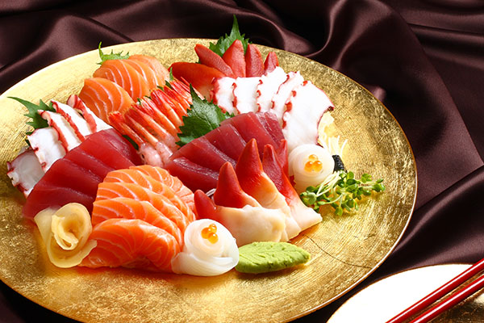

รายละเอียดของซาชิมิ (Sashimi)
ซาชิมิเป็นอาหารญี่ปุ่นที่ประกอบด้วยปลาหรืออาหารทะเลสดๆ ที่ถูกหั่นเป็นชิ้นบางๆ และเสิร์ฟพร้อมกับเครื่องเคียง เช่น ขิงดอง, วาซาบิ, และซอสถั่วเหลือง.
ประวัติ: ซาชิมิมีต้นกำเนิดในญี่ปุ่นและเป็นส่วนสำคัญของวัฒนธรรมการรับประทานอาหารญี่ปุ่น โดยมีการเสิร์ฟตั้งแต่ศตวรรษที่ 15.
การเตรียม: การทำซาชิมิเริ่มต้นด้วยการเลือกปลาหรืออาหารทะเลสดใหม่ จากนั้นจะถูกหั่นเป็นชิ้นบางๆ และเสิร์ฟดิบพร้อมกับเครื่องเคียงต่างๆ.